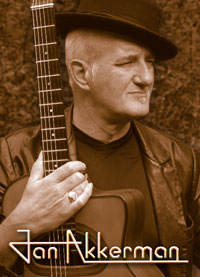

Ян Аккерман - выдающийся гитарист, композитор и аранжировщик, в 70-е - член крупной голландской арт-группы FOCUS, автор великолепных сольных работ, участник ряда интересных музыкальных проектов, концертирующий гитарист.Ян Аккерман родился 24 декабря 1946 года в Амстердаме. Его отец неплохо играл на гитаре, однако по-настоящему Ян пристрастился к музыке благодаря матери, которая поощряла его желание освоить аккордеон. В возрасте 8 лет Ян все-таки решил отдать предпочтение гитаре, уроки игры на которой он начал брать. При обучении в амстердамском Музыкальном лицее Аккерман получал именную стипендию. В 12 лет со своей первой группой JOHNNY AND THE CELLAR ROCKERS (в которую одно время входил барабанщик Пьер Ван Дер Линден (Pierre Van Der Linden), будущий соратник Яна по другим группам) Аккерман записал свой первый "сингл" - собственную версию джазового стандарта "Exodus", а также некую "Melody In F Rock" (впоследствии ансамблем было сделано еще несколько записей). Большое влияние на Яна оказал джаз и этническая музыка (включая латино), а также английский рок (THE SHADOWS, THE BEATLES и др.) и творчество Фрэнка Заппы.
В конце 50-х юный гитарист участвовал также в THE FRIENDSHIP SEXTET, а в 60-е проявил себя как лидер THE HUNTERS - группы, исполнявшей в основном кавер-версии, но также прославившейся и собственной темой под забавным названием "Russian Spy And I" (1966). Своего друга Пьера Ван Дер Линдена Аккерман в конце 60-х пригласил в сформированный им хард-роковый BRAINBOX (а позже коллеги воссоединились в "классическом" составе FOCUS). Соратником Аккермана по BRAINBOX был также вокалист/автор текстов Каз Лукс (Kaz Lux). BRAINBOX в 1969 году выпустил одноименный альбом на Parlophone Records. В том же году на голландском отделении "EMI" в 1969-м Аккерман записал свой первый сольник "Talent For Sale", который, однако, прошел малозамеченным (переиздан в 1973 под названием "Guitar For Sale" фирмой "Electrola").
Подлинная слава пришла к Аккерману в 70-е в связи с работой в составе группы FOCUS. В ноябре 1969 года в амстердамском театре Shaffy Ян Аккерман впервые джемовал с Tрио Тиса Ван Лира (Thijs Van Leer Trio), будучи приглашенным к участию басистом этого коллектива Мартином Дрезденом (Martijn Dresden). Трио давно уже подумывало о том, чтобы превратиться в квартет, и поэтому после первой же совместной сессии название было изменено на FOCUS. Этот коллектив (в числе других немногочисленных голландских групп, включая коллег по сцене - EKSEPTION) внес весомый вклад в развитие европейского арт-рока. В творчестве FOCUS нашли претворение стилевые модели ренессанса и барокко (Монтеверди, Свелинк, Бах), академического авангарда и джаза, традиции фламандской музыки. Альбомы "In And Out Of Focus" ("IRS", 1970), "Moving Waves" ("IRS", 1971), двойной "Focus III" ("IRS", 1972) являются подлинной классикой арт-рока.
В составе FOCUS Аккерман зарекомендовав себя как выдающегося гитариста, обладателя виртуозной техники и собственного оригинального стиля, а также талантливого композитора и аранжировщика. Отточенное и грациозное звучание его Les Paul, проводящего тему фуги или же свободно импровизирующего, являлось столь же неотъемлемой частью стиля FOCUS, как торжественный орган и нежная флейта Ван Лира. В 1973 году по итогам голосования журнала "Melody Maker" Аккерман был назван лучшим гитаристом.
Группа получила интернациональную известность, в 1973 году она занимала верхние строчки в хит-парадах нескольких европейских стран. FOCUS предприняли несколько успешных туров, в том числе и по США. И Аккерман, и его старый друг-коллега Ван Лир начали записывать сольные альбомы уже в составе FOCUS. Сольный альбом Аккермана "Profile" (1972, "EMI"), материал которого базировался в основном на старых набросках, сделанных в конце 60-х, был благосклонно принят публикой и критикой. В его записи Яну помогали бас-гитаристы Берт Руитер (Bert Ruiter) и Яап ван Эйк (Jaap van Eyck), Пьер ван дер Линден, ударник Франц Смит (Frans Smith) и перкуссионист Ферри Маат (Ferry Maat). В 1973 году Аккерман как соавтор и исполнитель на гитаре участвовал в записи альбома экс-гитариста YES Питера Бэнкса "The Two Sides Of Peter Banks" (лейбл "One Way"), а также, в числе других участников FOCUS, отметился на сольной пластинке бывшего басиста этой группы Сирила Хаверманса (Cyril Havermans) Cyril (1973, "MGM").
Оригинальным получился альбом "Tabernakel" (1974, "Atlantic Records"), отразивший увлечение Аккермана лютней (игру на которой Ян в это время освоил ) и лютневой музыкой. Диск был записан Аккерманом в содружестве с американским композитором, профессором Колумбийского университета Джорджем Флинном (George Flynn). На нем были представлены интерпретации старинных танцев для лютни (гальярды и паваны британских композиторов XVII-XVIII вв. Джона Дауленда, Томаса Морли и др.), а также ряд собственных произведений Аккермана и Флинна. Партии ударных исполнили Тим Богерт (Tim Bogart, бас-гитара) и Кармин Эппайс (Carmine Appice, ударные) из группы CACTUS. Альбом был высоко оценен ведущими музыкальными изданиями.
Между тем музыкальному материалу собственно FOCUS уже не доставало оригинальности и перспектив. После неудачного тура по Японии Яна перестала удовлетворять работа в группе, и в январе 1976 он вышел из ее состава, собрав собственный коллектив. В содружестве с бывшими вокалистом BRAINBOX - Казом Луксом, а также давним коллегой, ударником Пьером Ван Дер Линденом и другими музыкантами Аккерман образовал проект JAN AKERMAN & KAZ LUX. В 1976 году на фирме "Atlantic" вышел альбом "Eli" (партии клавишных на нем исполнил Рик ван дер Линден (Rick van der Linden) из EKSEPTION), а 1980 - диск "Transparental". В этот период Аккерман все больше склоняется склоняется к джаз-року.
Первый после работы в FOCUS собственно сольный альбом вышел в 1977 и назывался просто "Jan Akkerman". Звучание гитары и клавишных (Иоахим Кун (Joachim Kuhn)) дополнялось в нем контрапунктами симфонического оркестра. В 1978-м Ян выступил на джазовом фестивале в Монтрё, записи с которого затем вошли в альбом "Live" (1978, "Atlantic"). Очевидцы свидетельствуют, что во время исполнения пьесы "Tommy" у Аккермана случилась маленькая неприятность - он уронил гитару, однако этот момент, разумеется, не вошел в LP.
Помимо сольной и совместной деятельности, Аккерман в конце 70-х часто "гостил" в альбомах своих коллег: у TIELMAN BROTHERS в "Rock & Roll, Our First Love" (1976, "Fontana"), у джазового кларнетиста Тони Скотта (Tony Scott) в "Prism" (1977, Polydor) и "Meditation" (1977, "Polydor"), у певицы Мэгги Макнил (Maggie MacNeal) в "Fools Together" (1977, Warner Bros.), а также у клавишника голландской блюзовой группы CUBY AND THE BLIZZARDS Германа Бруда (Herman Brood) в альбоме "Street" (1977, "Ariola"). А в 1978 году Ян Аккерман с симфоническим оркестром под руководством Клауса Огермана (Claus Ogerman) записал диск "Aranjuez", в который вошло хрестоматийное произведение для гитары - "Аранхуэзский концерт" Хоакина Родриго (Адажио), переложения сочинений Э. Вилла-Лобоса, М. Равеля, Г. Санца, а также собственные композиции Аккермана и Огермана. В 1979 году выходит очередной "номерной" сольник под порядковым номером "3".
В 80-е Ян не снижал творческой активности, записывая как сольные альбомы, так и помогая своим коллегам - клавишникам Ясперу ван Хоффу (Jasper van't Hoff) и Бьорну Ясону Линду (Bjoern Jаson Lindh) в работе над диском "Atlantis" (1983, "Sonet"), голландской прогрессив-группе SOLUTION и др. Сольные диски "Oil In The Family" (1981, "Atlantic"), "Pleasure Point" (1982, "WEA") и "It Could Happen To You" (1982, "Polydor") показывают его интерес к экспериментам с гитарными синтезаторами (Ян также берет на себя функции бас-гитариста) и инструментальными составами (оригинальное сочетание гитар с вибрафоном и маримбами в "Oil In The Family"; к сожалению, критики сочил этот диск "провальным"). Подобные эксперименты продолжаются в "Can't Stand Noise" (1983, "CBS") и достигают апогея в "From The Basement" (1984, "CBS"), который Аккерман - вполне в духе требований времени - записывает с использованием новейших гитарных синтезаторов фирмы Roland, электронных ударных и драм-машины, а также вокодера. В записи этого альбома принимал участие коллега Яна по группе FOCUSклавишник Тис Ван Лир.
Встреча двух друзей-коллег в середине 80-х имела довольно "серьезные" последствия - в 1985 году на лейбле "Vertigo" в рамках проекта Jan Akkerman & Thijs van Leer они выпускают инструментальный диск "Focus" (1985), который вполне логично воспринимать как продолжение творчества легендарного коллектива (хотя теперь тандем более явно тяготел к джаз-року). В СD-вариант альбома вошли расширенные версии "Beethoven's Revenge" and "Who's Calling". В 1988 выходит концертный альбом Аккермана с пианистом Иоахимом Куном. 1989 год отмечен ярким выступлением Яна на фестивале "The Night Of The Guitars" в Лондоне, а 1990 - выходом очередного сольного альбома "The Noise Of Art" (на лейбле "IRS"), ставшего возвращением к более традиционному рок-инструментарию и стилистике. Еще один интересный проект - Forcefield: под этим ярлыком скрылись в конце 80-х Ян Аккерман, барабанщик Кози Пауэлл, а также бывший участник Spencer Davis Group, вокалист и гитарист Рэй Фэнвик (Ray Fenvick), записавшие несколько экспериментаторских альбомов.
В 1990 году Ван Лир, Аккерман и другие члены оригинального состава "на одну ночь" для выступления в программе голландского телевидения "Gold of Old" еще раз возрождают из пепла группу FOCUS. Однако, несмотря на признания Яна, что ему "приятно еще раз увидеть Пьера" и других коллег, продолжать FOCUS музыканты не собираются. Несмотря на это, Ван Лир и Аккерман еще раз играют вместе в 1993-м на North Sea Jazz Festival.
Август 1992 пролег в жизни Аккермана черной разделительной полосой - он попадает в тяжелую автокатастрофу. Альбом Puccini's Cafe (1993, "EMI"), записанный в период выздоровления, отражает, по признанию самого музыканта, его переживания, связанные с этим сложным периодом. Возвращение Яна на сцену состоялось на небольшом джазовом фестивале в Голландии, где Аккермана бурно приветствовала аудитория. В том же году Ян женится на своем "товарище по несчастью" Мэриэн (она была с ним той злополучной машине), которая помогает ему в музыкально-концертной деятельности, в частности, организует в 1994-95 годах серию выступлений под названием "Songs My Father Taught Me".
Альбомы 90-х - "Blues Hearts" (1994, "EMI"), "Focus In Time" (1996, "Patio Music", при участии Рика Ван Дер Линдена), полностью сольный "Passion" (1999, "Roadrunner"), концертник "10,000 Clowns on a Rainy Day" (1997, "Patio Music") отражают интерес Аккермана к блюзу, фьюжну, интерпретациям "классики", и, конечно же, прогрессив-року. В настоящее время Ян продолжает активно концертировать со своей Jan Akkerman Band (например, в июне 2001 он участвовал в одном концерте с патриархом блюзовой гитары - БиБи Кингом), дает мастер-классы. Сообщается о его сотрудничестве со Стивом Морсом, а также о записи нового сольного СD.
Те, кто в 70-е заслушивался альбомами группы Focus, в дальнейших подробностях, наверняка, не нуждаются. Ян Аккерман — гитарист, который уже провёл на сцене без малого пятьдесят (!) лет и за это время играл играл с Би Би Кингом, Питером Бэнксом, Клаусом Огерманом, Аланом Прайсом, Германом Бродом, Чарли Бёрдом и даже рэппером Айс Ти! Хотя кому-то это может показаться невероятным, но в 70-х всегда ревниво относившаяся к доморощенным кумирам британская рок-пресса, в частности, еженедельники "Melody Maker" и "NME", неоднократно называли Аккермана лучшим гитаристом мира, предпочитая его таким асам, как Эрик Клэптон, Джимми Пэйдж и Джефф Бек!
Он появился на свет в канун Рождества, 24 декабря 1946 в Амстердаме, и впервые взял в руки гитару в возрасте пяти лет. С фамилией Аккерман (по-тюркски — "белая крепость"), кстати, связано название небольшого городка в Одесской области (ныне Белгород-Днестровский), откуда и вышли родом предки Яна. С раннего детства его интересовала самая разная музыка: поп, блюз, рок-н-ролл, фламенко, классика и джаз, а его первой группой стали «Johnny & The Celler Rockers», куда в одиннадцатилетнем возрасте был приглашён юный виртуоз! Они играли инструментальную музыку не без оглядки на входивших в моду "The Shadows" и "The Ventures" и записали несколько синглов для голландских лэйблов. В начале 60-х их барабанщиком стал школьный друг Аккермана, столь же юный Пьер ван дер Линден.
В 1965 Аккерман побывал в Британии, где попал на концерт великого классического гитариста Джулиана Брима, который тогда увлекался лютневой музыкой Средневековья и включал в свои программы много барочных лютневых пьес старой Англии и ближнего зарубежья. Это оказало на двадцатилетнего Аккермана колоссальное воздействие, и по возвращении домой он тоже занялся музыкой барокко, которая оставила заметный след в его дальнейшем творчестве (достаточно вспомнить, например, номер "Elspeth of Nottingham" из альбома Focus "Focus 3").
В том же 1965 Аккерман и ван дер Линден собрали бит-группу "The Hunters", которая добилась успеха в европейских чартах с пьесой "The Russian Spy & I", которая стала первой большой удачей Аккермана как композитора. В 1967 гитарист записал альбом инструментальных версий текущих поп-хитов для мелкого бюджетного лэйбла. После того, как он добился известности, диск неоднократно переиздавался самыми разными компаниями — к неудовольствию самого Аккермана, который не без основания считал работу случайной, заурядной и не заслуживающей внимания.
В 1968 Аккерман и ван дер Линден стали участниками первой в Голландии супергруппы "Brainbox", в которой пел ещё один их будущий соратник Казимир "Каз" Люкс из антверпенской группы "Truth". "Brainbox" заслужил статус группы N1 в прогрессивном роке Нидерландов, однако, после первого же их альбома Аккерман и ван дер Линден ушли, после чего гитарист присоединился к группе "Focus" выпускника Консерватории Тиса ван Лира и играл на их первом — неудачном — альбоме. После провала работы они распустили "Focus" первого созыва и собрали новую группу, в которую вошли басист Сирил Хаверманс и проверенный в деле ван дер Линден.
Начиная с 1971 и второго альбома "Focus" "Moving Waves" они стали самой успешной группой Нидерландов (не только в 70-х, но и за всю историю местной рок-сцены), а Аккерман не расстаётся с титулом лучшего гитариста страны. Помимо того, в 1971 он выпустил в Британии (на "Sovereign") альбом дуэтом с экс-гитаристом "Yes" и всегда неординарно мыслившим музыкантом Питером Бэнксом. С того момента, как записи "Focus" начали выходить за пределами Голландии, в частности, в Британии, Аккерман быстро заработал культовый статус и там.
Аккерман оставался в составе "Focus" до осени 1976, то есть на всём протяжении их самого креативного периода, а его композиции неизменно становились жемчужинами дисков группы. В 1973 опpос жуpнала "Melody Maker" впервые назвал его "лучшим гитаpистом года" в Британии.
Параллельно развивалась сольная карьера музыканта. Помимо многократно выходившего неавторизованного альбома его школярских упражнений ("Guitar For Sale" и т.п.) в числе его работ периода — выпущенный престижным лэйблом Harvest диск "Profile" (1972); возможно, его лучшая запись этих лет "Tabernakel" (1974), на которой с ним записывалась легендарная ритм-секция — Тим Богерт (бас) и Кэрмин Эппис (барабаны) (экс-Pigeons, Vanilla Fudge, Beck Bogert Appice и т.д.), — по признанию которых альбом стал самой необычной работой в их дискографии.
В 1977 Аккерман организовал дуэт "ELI" со старым коллегой Казом Люксом и выпустил с ним одноименный альбом под лэйблом Atlantic ("Atco" в Соединённых Штатах). Позднее теми же компаниями были изданы его ещё один студийный и концертный альбомы. В 1978 на альбоме "Aranjuez" (CBS/Columbia) с ним играл знаменитый Клаус Огерман. Помимо того в активе музыканта — выступление со своей группой на легендарном джазовом фестивале в Монтрё (1978), работа в Дании и Швеции (1981-1982). В 1982 Аккерман на спор (!) за 24 часа записал полновесный альбом "Oil in the Family" (он вышел под лэйблом Metronome).
В целом, музыкальные критики оценивают творчество Аккермана начиная с середины 80-х как весьма интересное и богатое идеями, однако, непредсказуемое, эклектичное и чересчур разноплановое: музыкальные журналы, торговые каталоги и рецензенты числят его кто по ведомству классики, кто по джазу, кто по року, кто по авангарду и т.д. К тому же, значительная часть его работ издавалась лишь небольшими компаниями в Голландии или Германии (где интерес к творчеству Аккермана был неизменно высок).
Среди многочисленных записей этого периода необходимо отметить один из лучших альбомов Аккермана "From the Basement" (CBS, 1984), "Heartware" (1987), студийный comeback "Focus" (1986), "The Noise Of Art" (изданный Майлзом Коуплендом в своей серии гитарных альбомов), "Puccini's Cafe" и т.д.
В 1991-1992 Ян Аккерман гастролировал с чикагским блюзовым трио Чарли Бёрда, а с середины 90-х регулярно гастролирует в Великобритании, где его неизменно тепло принимает избалованная хорошей музыкой английская публика. Помимо того, в 1997 музыкант открыл собственный лэйбл Akkernet Records, под которым уже вышло несколько его (как правило, концертных) альбомов.
www.janakkerman.nl - официальная страница Яна Аккермана